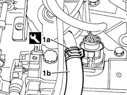
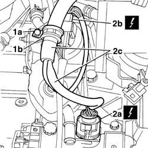
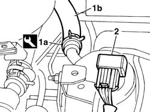
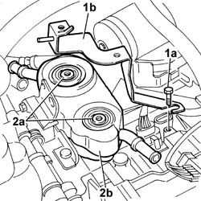
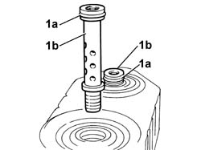
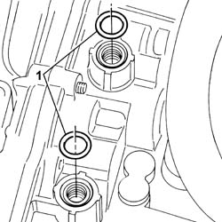
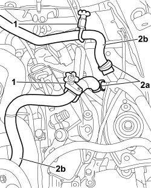
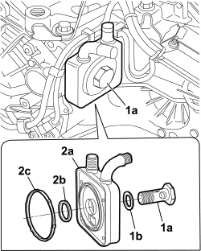

2130A38 AUTOMATIC TRANSMISSION FLUID HEAT EXCHANGER - R + R - INCLUDING LEVEL TOP UP IF NECESSARY
- Path
- Procedures > 21 GEARBOX UNIT > 2130 AUTOMATIC TRANSMISSION WITH DIFFERENTIAL > 2130A AUTOMATIC TRANSMISSION ASSEMBLY > 2130A38 AUTOMATIC TRANSMISSION FLUID HEAT EXCHANGER - R + R - INCLUDING LEVEL TOP UP IF NECESSARY
- Kind
- repair procedure (removal / refitting; the operation number is the code)
- Applies to
- engines: 2.0 16v, 3.0 24V V6, 2.0 16V JTD; all production periods
- Interactive page
- https://sloeber94.github.io/elrnDB-fUlss/en/#/179007245
Applies to: engines: 3.0 24V V6; all production periods
 Removing
Removing
 Refitting
Refitting- Disconnect the negative battery terminal.
 | Description | Connector |
|---|---|---|
. | Battery |
Op. 5010B18 HEATING VENTILATION UNIT AIR INTAKE - R+R
Op. 5050B34 WINDSCREEN WIPER ARM/S COMPLETE WITH BLADE - R+R
Op. 7210E22 R.R. WINDSCREEN BASE TRIM
Op. 1016A42 LEFT HAND CYLINDER HEAD IGNITION COIL COVER - R+R
Op. 1048A47 SLEEVE FROM RIGID PIPE TO THROTTLE BODY - R R
See descriptions
- Prepare a suitable container for collecting the engine coolant.
1. Using the special tool, loosen the band (1a), disconnect the coolant supply pipe (1b) from the radiator to the automatic transmission fluid heat exchanger and drain the engine coolant.
 | Description | Code | Function |
|---|---|---|---|
1a | Caliper | Band opening |

Applies to: engines: 3.0 24V V6; all production periods
1. Undo the fixing bolt (1b) and remove the band (1b).
2. Disconnect the connector (2a) located on the valve assembly and the connector (2b) for the gear selector and release the wiring (2c).
| Description | Connector |
|---|---|---|
2a | Automatic transmission solenoid valves |
- 2b - Gear controls H037

Applies to: engines: 3.0 24V V6; all production periods
1. Using the special tool, loosen the band (1a) and disconnect the coolant return pipe (1b) from the automatic transmission fluid heat exchanger to the engine.
| Description | Code | Function |
|---|---|---|---|
1a | Caliper | Band opening |
2. Release the connector for the gear selector wiring from the mounting bracket.

Applies to: engines: 3.0 24V V6; all production periods
1. Undo the fixing bolt (1a) and remove the wiring mounting bracket (1b).
2. Undo the pins (2a) and remove the automatic transmission fluid heat exchanger (2b).

Applies to: engines: 3.0 24V V6; all production periods
Applies to: engines: 3.0 24V V6; all production periods
Refitting
Removing1. Replace the seals (1a) for the pins (1b) fixing the heat exchanger.

Applies to: engines: 3.0 24V V6; all production periods
1. Replace the seals in the housings for the pins fixing the heat exchanger.

Applies to: engines: 3.0 24V V6; all production periods
- Position the automatic transmission fluid heat exchanger, tighten the fixing pins alternately to ensure that the heat exchanger is correctly positioned in relation to the gearbox casing and tighten to the recommended torque.
 | Value - daNm | Fastening | Component | Ø  |
|---|---|---|---|---|
. | 3,5 | Bearings | AUTOMATIC TRANSMISSION FLUID HEAT EXCHANGER |
- Position the wiring mounting bracket and tighten the fixing bolt.
- Place the gear selector wiring connector in position.
- Connect the automatic transmission fluid heat exchanger coolant supply and return pipes and refit the bands using the special tool.
| Description | Code | Function |
|---|---|---|---|
. | Caliper | Band opening |
- Connect the connector for the solenoid valve assembly and the connector for the gear selector wiring
| Description | Connector |
|---|---|---|
. | Automatic transmission solenoid valves |
- Gear controls H037
- Position the wiring and tighten the fixing bolt for the retaining band.
See descriptions
Op. 1048A47 SLEEVE FROM RIGID PIPE TO THROTTLE BODY - R R
Op. 1016A42 LEFT HAND CYLINDER HEAD IGNITION COIL COVER - R+R
Op. 7210E22 R.R. WINDSCREEN BASE TRIM
Op. 5050B34 WINDSCREEN WIPER ARM/S COMPLETE WITH BLADE - R+R
Op. 5010B18 HEATING VENTILATION UNIT AIR INTAKE - R+R
- Connect the negative battery terminal.
| Description | Connector |
|---|---|---|
. | Battery |
Op. 0010T45 AUTOMATIC TRANSMISSION FLUID CHECK LEVEL AND TOP UP IF NECESSARY
Op. 0010T21 ENGINE COOLANT - CHECK DENSITY AND CHANGE, IF NECESSARY
Applies to: engines: 2.0 16v, 2.0 16V JTD; all production periods
Removing
Refitting- Turn the ignition key to the OFF position.
- Disconnect the negative battery terminal.
Connector | Description |
|---|---|
A001 | Battery |
Op. 1048A11 AIR CLEANER ASSEMBLY - R R FOR VERSIONS WITH AUTOMATIC TRANSMISSION
Op. 4450B02 LEFT FRONT WHEEL - R.R
Op. 7055B90 LEFT FRONT WHEEL ARCH LINER - R.R.
Arrange containers to collect the engine coolant and the automatic transmission fluid.
1. Apply pipe clamps to the coolant supply and return pipes to the heat exchanger
2. Using the special tool, loosen the anchorage bands (2a) and disconnect the coolant delivery and return pipes (2b) from the automatic transmission fluid heat exchanger.

Applies to: engines: 2.0 16v, 2.0 16V JTD; all production periods
1. Unscrew fitting (1a) and recover the gasket (1b).
2. Remove heat exchanger (2a) and recove seals (2b) and (2c).

Applies to: engines: 2.0 16v, 2.0 16V JTD; all production periods
Applies to: engines: 2.0 16v, 2.0 16V JTD; all production periods
Refitting
Removing- Position the heat exchanger on the transmission casing, tighten the union and tighten to the specified torque.
Value daNm | Fastening | Component | dia |
|---|---|---|---|
5,0 | Bolt | Union securing the heat exchanger to the transmission. |
Connect the coolant delivery and return pipes and tighten the fastening collars
Op. 0010T21 ENGINE COOLANT - CHECK DENSITY AND CHANGE, IF NECESSARY
Op. 0010T45 AUTOMATIC TRANSMISSION FLUID CHECK LEVEL AND TOP UP IF NECESSARY
Op. 7055B90 LEFT FRONT WHEEL ARCH LINER - R.R.
Op. 4450B02 LEFT FRONT WHEEL - R.R
Op. 1048A11 AIR CLEANER ASSEMBLY - R R FOR VERSIONS WITH AUTOMATIC TRANSMISSION
- Connect the negative battery terminal.
Connector | Description |
|---|---|
A001 | Battery |
Topics linked from this page (10)
- 0010T21 ENGINE COOLANT - CHECK DENSITY AND CHANGE, IF NECESSARY
- 0010T45 AUTOMATIC TRANSMISSION FLUID CHECK LEVEL AND TOP UP IF NECESSARY
- 1016A42 LEFT HAND CYLINDER HEAD IGNITION COIL COVER - R+R
- 1048A11 AIR CLEANER ASSEMBLY - R R FOR VERSIONS WITH AUTOMATIC TRANSMISSION
- 1048A47 SLEEVE FROM RIGID PIPE TO THROTTLE BODY - R R
- 4450B02 LEFT FRONT WHEEL R R
- 5010B18 CLIMATE CONTROL UNIT AIR INTAKE - R.R.
- 5050B34 WINDSCREEN WIPER ARM/S COMPLETE WITH BLADE - R+R
- 7055B90 LEFT FRONT WHEEL ARCH LINER - R.R.
- 7210E22 WINDSCREEN BASE TRIM